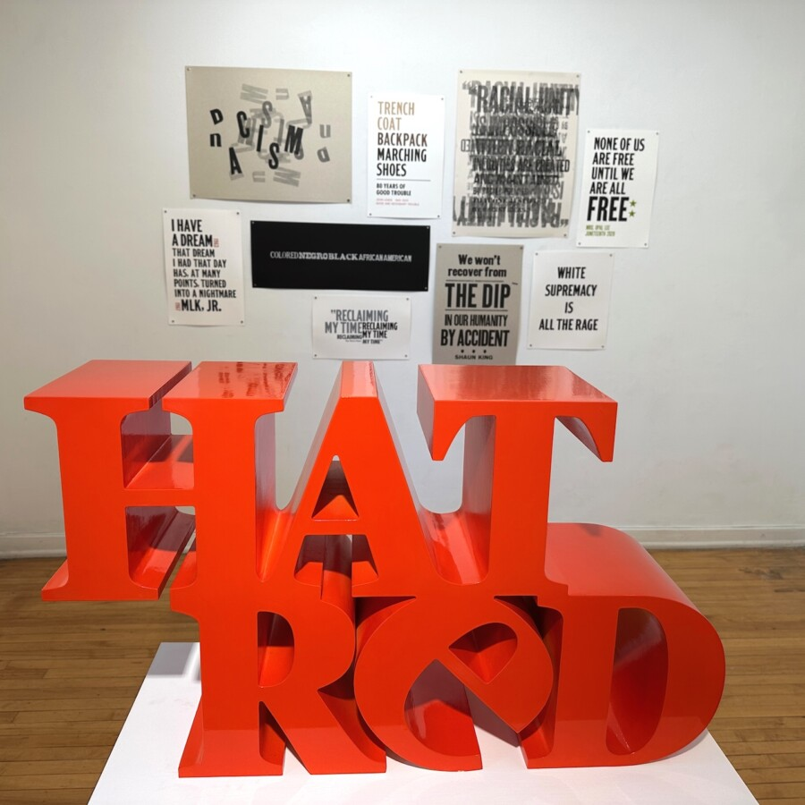

Good Trouble: Ben Blount + Catherine Jacobi Artists Talk
GOOD TROUBLE: BEN BLOUNT AND CATHERINE JACOBI
Artist Talk: Saturday, May 9, 2026, 2:00 pm
Exhibition Dates: April 19 – June 6, 2026
Gallery Hours: Thursdays, Fridays, and Saturdays, 1:00 – 5:00 pm
“Go out there, speak up, speak out. Get in the way. Get in good trouble, necessary trouble, and help redeem the soul of America.” -U.S. Congressman and civil rights leader John Lewis
The Riverside Arts Center’s Freeark Gallery presents Good Trouble: Ben Blount and Catherine Jacobi, curated by Joanne Aono. Featured are Blount’s letterpress prints and books along with Jacobi’s found object constructions, sculptures, and prints addressing immigration, human rights, race, and civil liberties. Both artists channel difficult and disturbing issues into their art, allowing us to process the information to shape our own thoughts. As they create good trouble, they prompt us to continue our necessary conversations and actions. Join us for an artists talk on Saturday, May 9th at 2pm. The exhibition is on view through June 6, 2026.
Ben Blount is a Detroit born artist, designer and letterpress printer best known for work that explores ideas of race, identity and the stories we tell ourselves about living in America. He uses typography and language to create printed work that moves through the realms of graphic design, print culture and activism. Blount earned an MFA in Interdisciplinary Book and Paper Arts from Columbia College Chicago and a BFA in Graphic Design from Washington University in St. Louis. He has been a visiting artist at Colorado College, Columbia College Chicago, Indiana University, Rutgers University–Newark and Minneapolis College of Art and Design. His work is widely exhibited and included in the collections of the Newberry Library, the Chicago Field Museum, Bainbridge Island Museum of Art, the Smithsonian National Museum of African American History and Culture, and the Metropolitan Museum of Art. Blount lives and works just north of Chicago in Evanston, Illinois. http://www.benblount.com
Catherine Jacobi is a Chicago artist whose work explores transformation and value through the use of found materials. By recontextualizing discarded and everyday objects, her practice gives new meaning to materials that might otherwise be overlooked, inviting viewers to reconsider notions of worth, use, and permanence. She holds an MFA in sculpture from Cranbrook Academy of Art in Michigan, a BFA in Graphic Design from Drake University in Iowa, and certificates from the University of Chicago’s Basics and Asian Studies Programs. Her work is held in several private collections and has been exhibited nationally including T. Mari Gallery and Aron Packer Projects in Chicago and Context Art Miami. https://www.catherinejacobi.com https://www.riversideartscenter.com/freearksculpturegarden/2026/04/ben/blount/catherine/jacobi/good/trouble